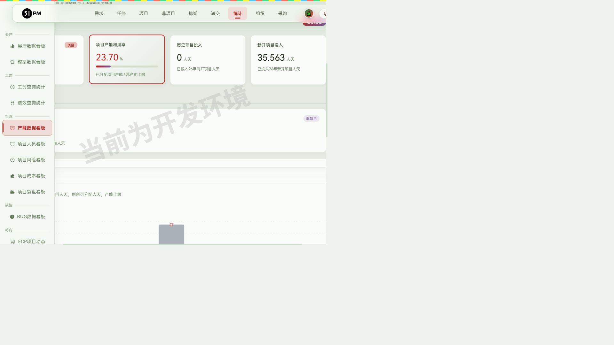
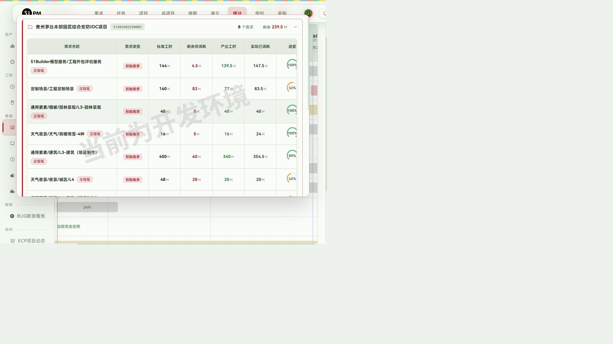
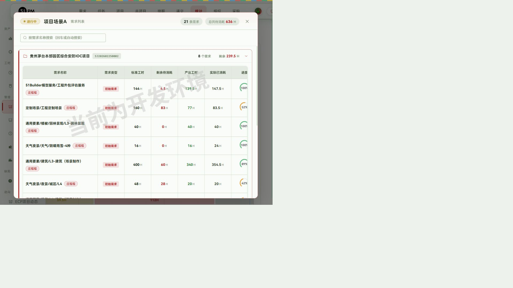
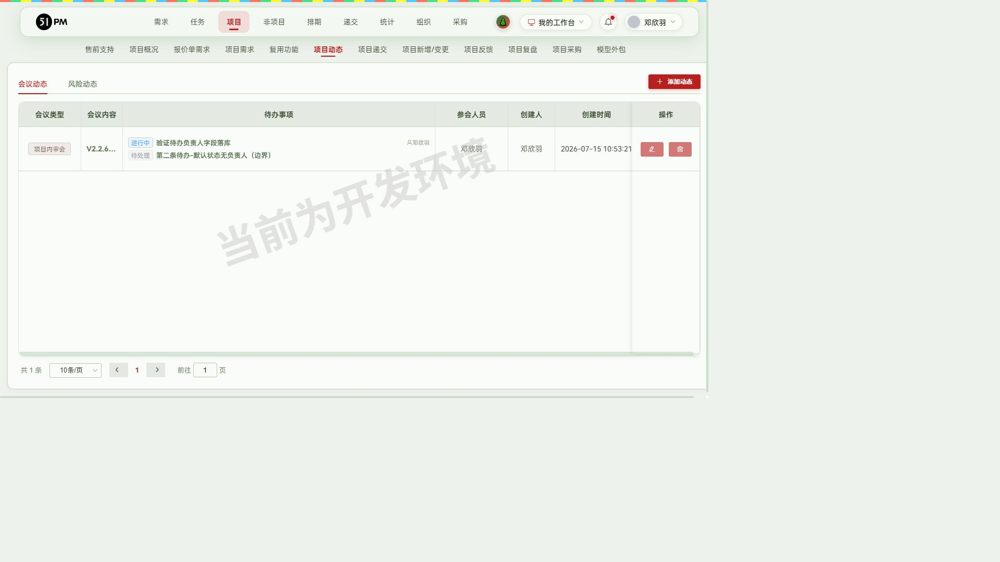
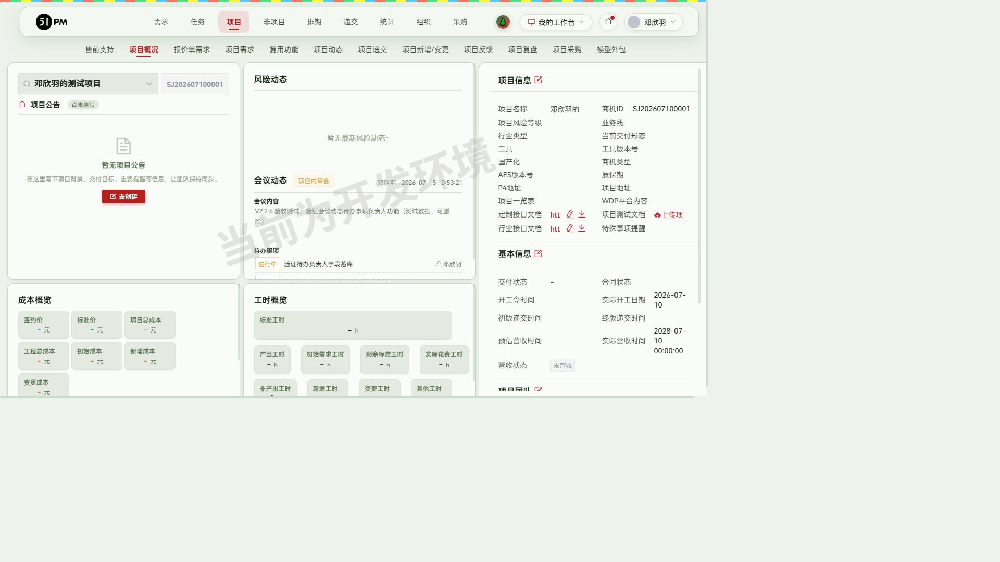

51PM V2.2.6 验收报告
- 验收时间：2026-07-15 11:45
- 环境：测试 10.67.8.183:7777
- 验收账号角色：邓欣羽（Web端开发；#6712 项目
PM/TB/QA/场景主导人）
- 覆盖层：每个功能默认覆盖 UI 流程 / 边界 / 接口 / 数据一致性
四层
- 总览：5 项验收，✅5 / 🐛0 / ⚠️0；另有 4
项附随发现待人工确认（不阻断发版，见下文「交付前需人工确认」表）
回归结果（阶段 1）
npx playwright test 只读全量：8 通过 / 1
跳过（@write）/ 1 意外失败- 失败用例「④
创建任务流程内可就地管理组群」复跑通过（首跑时项目需求页偶发空载，非回归
BUG、非数据缺失——需求页现有 3 条需求）
- 哨兵用例「发包详情『任务管理』按钮」仍预期失败（BUG
未修复，绿色）
- 结论：老功能无回归。
0.
原始验收需求（开发者提交的本周开发内容）
V2.2.6发版内容如下： 用户体验：
1.工时填写：希望填写工时时，增加显示任务描述，因为DTA的任务全部名称创建在任务描述内，目前无法看到
2.递交模块：建议QA在填写递交时，能根据时间自动判定选择"正常递交"与"提前递交"
新增功能：
3.项目概览：新增行业接口说明书的存放位置，需要区分工程定制接口和行业接口。
4.项目动态：希望给会议动态的待办项添加一个选择负责人，以便待办事项的跟进，详见图
5.统计-产能数据看板：工程产能分析&小组产能看板（点击对应色块可查看详细内容）
对应关系：需求 1 → §1，需求 2 → §2，需求 3 → §3，需求 4 → §4，需求 5
→ §5
1.
工时填写显示任务描述 — ✅通过
- 入口：「我的地盘 → 我的任务（日历）」点日历格 → 右侧任务卡片
- 实走流程：1) 进入我的任务日历 2) 点 7月9日格子 3)
核对侧栏任务卡字段
- 结果：任务卡片新增「备注」字段，完整展示任务描述原文。实测两条任务：「V224边界-负工时(可删除)」显示描述"边界测试"；「AI探索-AI应用
| 16H」显示 60+ 字长描述完整不截断；无描述任务不显示异常
- 覆盖层：UI ✅ / 边界 ✅（长文本、无描述空态）/ 接口
✅（任务列表接口返回的描述字段与卡片展示一致）/ 数据 ✅
- ⚠️
备注：「填写工时→添加工时」弹窗内部（花费人/日期/花费总计表单）未展示任务描述，描述仅显示在日历任务卡上；弹窗标题仅任务名。如需求方期望弹窗内也显示，需开发补充（见人工确认表
#1）
- 截图：final-工时填写任务描述.jpg
- 推断需关注人员：全员（尤其 DTA）
- 【发版素材】「我的任务」日历任务卡新增任务描述（备注）展示，方便填写工时时直接查看
DTA 任务全名；
2. 递交状态自动判定 —
✅通过
- 入口：「递交」→ 递交列表行「QA递交」→ 项目递交弹窗「项目递交
(QA)」tab
- 实走流程（为造前置数据走通完整递交链）：
- TB/BD 仪表盘 →「立即申请递交」→ 为
邓欣羽的测试项目（#6712）申请进度递交，要求时间 2026-07-16
20:00（递交申请 #423）
- 我的信箱 →「审批递交申请(PM)」→ 转化为递交（PM 审批表单）→
递交创建成功、状态「已排期」
- 递交列表筛 7/15~7/17 → 打开「QA递交」弹窗
- 核心断言：弹窗打开时「递交状态」已自动预选**「提前递交」**（今天
7/15 早于要求时间 7/16 ≥1
天）；下拉仍可手动改（未递交/正常递交/提前递交/延期交付/PM递交 共 5
项）；填版本号 v0.0.1 + 实际递交时间 +
遗留问题后提交成功，列表状态列显示「提前递交」，落库正确
- 判定逻辑（源码确认，
publish_list.vue
回显逻辑）：当前日期比要求递交日期早 ≥1 天 →
默认「提前递交」，否则默认「正常递交」；控制台有
[递交状态判断] 调试日志
- 覆盖层：UI ✅ / 边界 ✅（源码级确认 ±1 天分界）/ 接口
✅（
project_moment/get_list?project_id=6712&type=1
返回待办含负责人+状态字段，total=1 与列表一致）/ 数据
✅（提交后列表与筛选统计一致）
- ⚠️ 备注
1：晚于要求时间不会自动选「延期交付」（默认值只有提前/正常两种），延期场景仍需
QA 手动选择——需确认是否符合预期（见人工确认表 #2）
- ⚠️ 备注
2：「QA递交」按钮由用户名白名单（
testListRooters）控制而非项目
QA 角色，验收账号不在白名单，验收时通过 Vue
数据放开展示层门禁后真实点击验证；请确认正式环境 QA
人员均在白名单内（见人工确认表 #3）
- 截图：final-递交状态自动判定.jpg
- 推断需关注人员：QA
- 【发版素材】QA 填写递交时，递交状态根据 TB/BD
要求递交时间自动判定"提前递交/正常递交"，仍可手动调整；
3.
项目概览-行业接口文档 — ✅通过
- 入口：「项目 → 项目概况」右侧「项目信息」栏
- 实走流程：1) 进入 邓欣羽的测试项目（#6712）项目概况 2) 核对文档位 3)
分别上传两份 txt 验证
- 结果：项目信息栏依次存在「定制接口文档 / 项目测试文档 /
行业接口文档」三个独立文档位；「上传行业接口文档」与「上传定制接口文档」各自弹上传窗，上传成功后各生成独立在线链接（projectapi.51aes.com，两个
UUID 不同），互不覆盖
- 覆盖层：UI ✅ / 边界 ✅（先后上传互不影响）/ 接口 ✅（上传接口
200、链接可访问）/ 数据 ✅（刷新后两链接保留）
- 截图：final-行业接口文档.jpg
- 推断需关注人员：PM、项目开发、二开
- 【发版素材】项目概况新增「行业接口文档」独立存放位，与工程定制接口文档区分管理、互不覆盖；
4.
会议动态待办项负责人 — ✅通过
- 入口：「项目 → 项目动态 → 添加动态（会议动态）→ 待办事项」
- 实走流程：1) #6712 项目动态 → 添加动态 2) 会议类型「项目内审会」+
会议内容 3) 待办 #1「验证待办负责人字段落库」选状态「进行中」+
相关人员「邓欣羽」 4) 添加待办 #2（不选负责人，默认「待处理」，边界）5)
参会人员选邓欣羽 → 提交
- 结果：提交成功；列表「待办事项」列回显 每条待办的 状态标签 + 内容 +
负责人（#1 显示"进行中/邓欣羽"，#2
显示"待处理/无人"）；刷新页面后数据保留（落库确认）
- 待办可选状态：待处理 / 进行中 /
已完成；负责人下拉为全员人员列表
- 覆盖层：UI ✅ / 边界 ✅（无负责人待办正常保存）/ 接口
✅（
project_moment/get_list 返回待办含负责人字段）/ 数据
✅
- 截图：final-会议动态待办负责人.jpg
- 推断需关注人员：PM
- 【发版素材】会议动态待办事项支持逐条指定负责人与状态（待处理/进行中/已完成），方便待办跟进；
5. 统计-产能数据看板
— ✅通过
- 入口：「统计 → 产能数据看板」，路由
/statistic/capacity_analysis；页头「工程产能分析 /
小组产能看板」点击切换
- 实走流程与结果：
- 工程产能分析（部门维度）：
- 「总产能上限」= 该部门总人数 × 天数（285
人天/周）；「非生产成员过滤（8）」按钮弹出排除名单（张皓然、常磊、庄程程、何魏、蔡荣、张炼、周辉、李润芝），支持增删与恢复默认——即"只计算投入生产人员"口径
✅
- 「总待消耗人天」= 未开工需求标准人天 + 进行中需求剩余标准人天 =
540.813，下分**进行中 245.75（45.4%）/ 暂停 206.06（38.1%）/ 未开工
89（16.5%）**三统计，占比合计 100% ✅
- 「产能消耗情况」合并板块（"项目 与 非项目
两大块产能去向明细"），下分「项目产能」「非项目产能」两个子模块
✅；项目产能利用率 23.70% = 67.563 / 285 交叉验算一致 ✅
- 附：产能趋势图 + 资源分配热力图（成员×日期，8h 饱和度着色）
- 小组产能看板（小组维度）： 5)
「待消耗产能分布图」：118 个工作日 × 12
个小组，甘特图时间轴仅工作日（7月13个工作日，跳过周末）✅；色条分
进行中（绿）/ 未开工 / 暂停中（红）✅ 6) 色块 hover
提示换算逻辑：如项目场景A 636H →"11.4 工作日（7人并行）总计约 79.5 人天"
✅ 7) 点击色块下钻：弹出需求列表明细（项目场景A 进行中
21 条需求 / 总待消耗
636H，按项目分组树状展示，含标准工时/剩余待消耗/产出工时/实际已消耗/进度/起止时间），总计与色块标签一致
✅
- 覆盖层：UI ✅ / 边界 ✅（非法日期
start=bad
静默兜底不报错⚠️建议后端补校验、不存在部门 dept=999999
返空不 500）/ 接口
✅（data_export/get_employee_project_list
正常+非法日期+越权部门三组参数均无 5xx，结构完整）/ 数据
✅（利用率、占比、色块工时三处交叉验算一致）
- 说明：需求图中的"部门维度/小组维度"切换在实现上对应「工程产能分析（部门级）/
小组产能看板（小组级）」页面级切换，能力等价
- 截图：final-产能消耗情况.jpg、final-小组产能看板.jpg、final-小组产能色块详情.jpg
- 推断需关注人员：PMO、PM、组长
- 【发版素材】见 §发版内容 新增功能第 1 条；
接口测试汇总与未覆盖声明
各功能的接口验证明细已写在对应功能节的「覆盖层-接口」中；本节只放不隶属单一功能的附带发现与全局声明。全部接口用例（含完整参数）已固化为
regression/tests/api-v2.2.6.spec.js
纯接口回归（不开浏览器，秒级）。
跨功能附带发现：
| # |
发现 |
证据 |
建议 |
| 1 |
project_publish/get_list 的 project_id GET
参数疑似未参与过滤 |
不存在 id（99999999）与正常 id（6712）均返回全量 total=12810 |
后端确认参数解析（前端可能走
POST/别名参数）；确实未过滤则修复（确认表 #4） |
| 2 |
前端权限门禁后端未同步：「通过审批」按钮前端按
systemRole==='PM'
禁用，但后端审批接口对非白名单用户放行 |
本轮验收即以此创建递交成功 |
后端补角色校验（确认表 #3） |
未覆盖声明（如实）：写接口（会议动态提交、QA
递交提交、递交申请/审批）仅覆盖正常路径（UI
真实提交），未做非法参数直调；超长文本/特殊字符/极大数值等极限值本轮未覆盖。
交付前需人工确认（汇总）
| # |
事项 |
建议 |
| 1 |
「添加工时」弹窗内部未显示任务描述，描述仅在日历任务卡展示 |
与需求方确认"填写工时时可见"是否已满足；不满足则开发补充弹窗内展示 |
| 2 |
实际递交时间晚于要求时间时，递交状态不会自动判定为「延期交付」，仍默认「正常递交」 |
确认是否设计如此（延期需走责任人/原因必填流程，自动选可能误触） |
| 3 |
「QA递交」「通过审批」按钮由用户名白名单（testListRooters
/ PM 硬编码名单）控制，非按项目角色；且后端对 PM
审批接口未做同等校验 |
确认正式环境 QA/PM 名单已维护；建议后端补角色校验 |
| 4 |
接口 project_publish/get_list 的
project_id GET 参数疑似不生效（任意 id 均返回全量 12810
条） |
后端确认参数解析（前端实际可能走
POST/别名参数）；如确实未过滤建议修复 |
验收产生的测试数据（测试环境，无需清理）
- 邓欣羽的测试项目（#6712）：递交申请 #423 + 递交记录（提前递交
v0.0.1，要求 2026-07-16 20:00）、会议动态 1 条（项目内审会，含 2
条待办）、行业/定制接口文档各 1 份、项目测试(QA) 字段设为邓欣羽——均已被
v2.2.6.spec.js / api-v2.2.6.spec.js
作为数据前置条件引用，勿删
发版内容（初稿）
已按 发版记录/发版.md 人工定稿回填修正（初版初稿见 git 历史）。
V2.2.6 发布于 2026-06-01
影响强度
强度较小，主要为产能数据看板的升级优化，新增小组产能分布图、项目动态待办跟踪及行业接口文档管理。
新增功能
需关注人员：PM、组长、QA
1.「统计-产能数据看板」：（精细化管理团队与小组产能，科学评估工程承接能力）
「团队产能分析」升级优化产能计算模型，仅统计投入生产人员，剔除部分负责人影响；总待消耗工时新增"进行中、待开工、暂停中"三项细分统计，帮助
PMO、PM 快速判断团队整体承接能力；
「小组产能看板」新增以小组为维度的待消耗产能分布图，基于工作日时间轴展示各小组剩余工时分布，时间轴按"剩余工时
÷
组内人数"计算消耗周期；点击色块可下钻至需求列表，以树状形式展示项目与需求层级及各项工时明细；



2.「项目-项目动态」：（方便跟踪会议待办事项执行情况）
支持PMO、PM在项目动态中为待办事项设置状态及相关人员，便于跟踪待办事项进展与负责人；

3.「项目-行业接口文档」：（快速查阅接口资料）
开放行业接口文档，并区分行业接口文档与工程定制接口文档，支持上传、编辑、下载功能，方便统一维护与查看项目接口资料；

发布记录表行（供归档）
| 版本号 |
更新时间 |
核心更新内容 |
影响角色 |
| V2.2.6 |
2026-06-01 |
主要为产能数据看板的升级优化，新增小组产能分布图、项目动态待办跟踪及行业接口文档管理 |
全员 |
交接给发版技能
定妆图清单：final-工时填写任务描述.jpg、final-递交状态自动判定.jpg、final-行业接口文档.jpg、final-会议动态待办负责人.jpg、final-产能消耗情况.jpg、final-小组产能看板.jpg、final-小组产能色块详情.jpg；各功能【发版素材】段
+ 上方「发版内容」（已与定稿同步），可直接对照 发版记录/发版.md
归档。